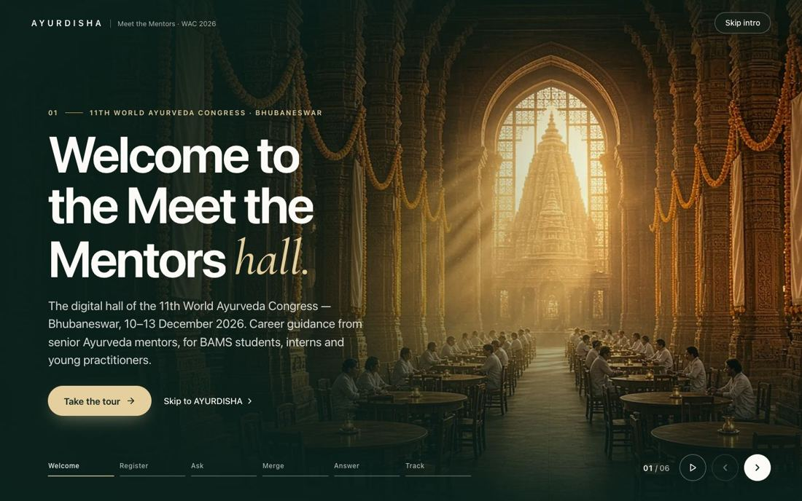
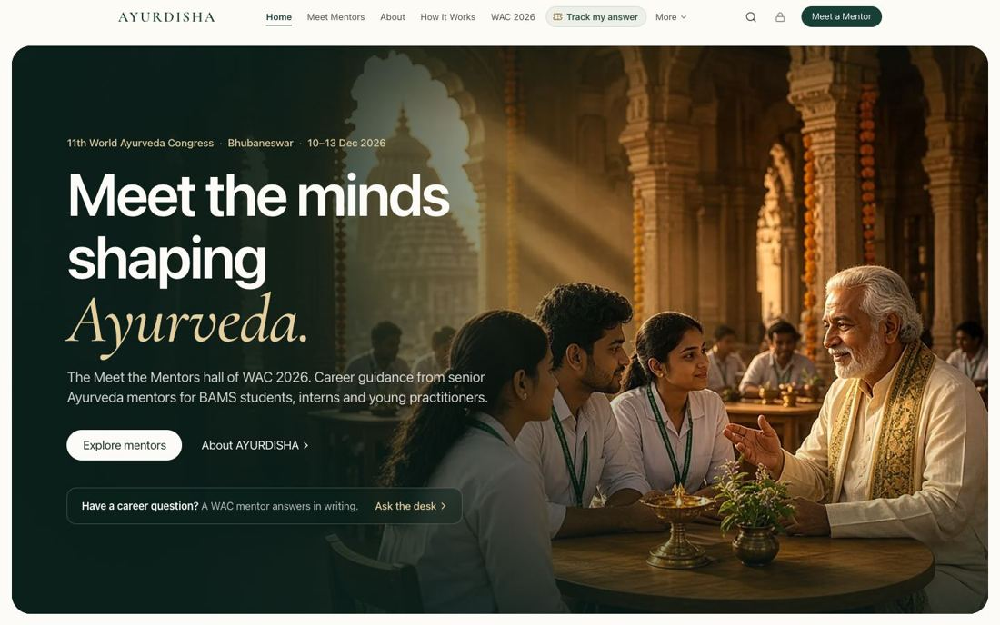
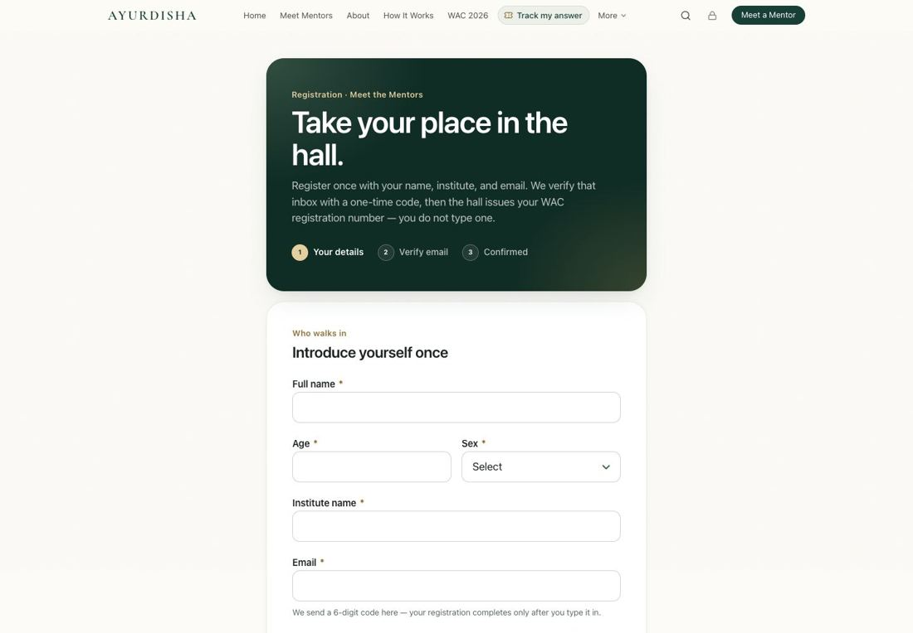
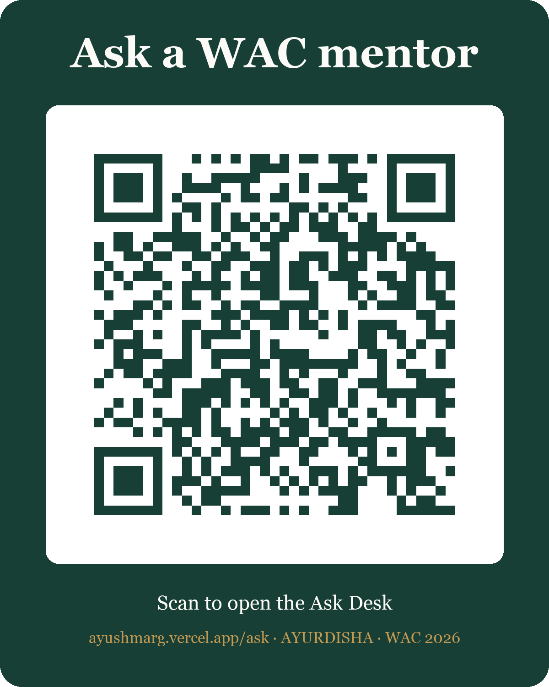
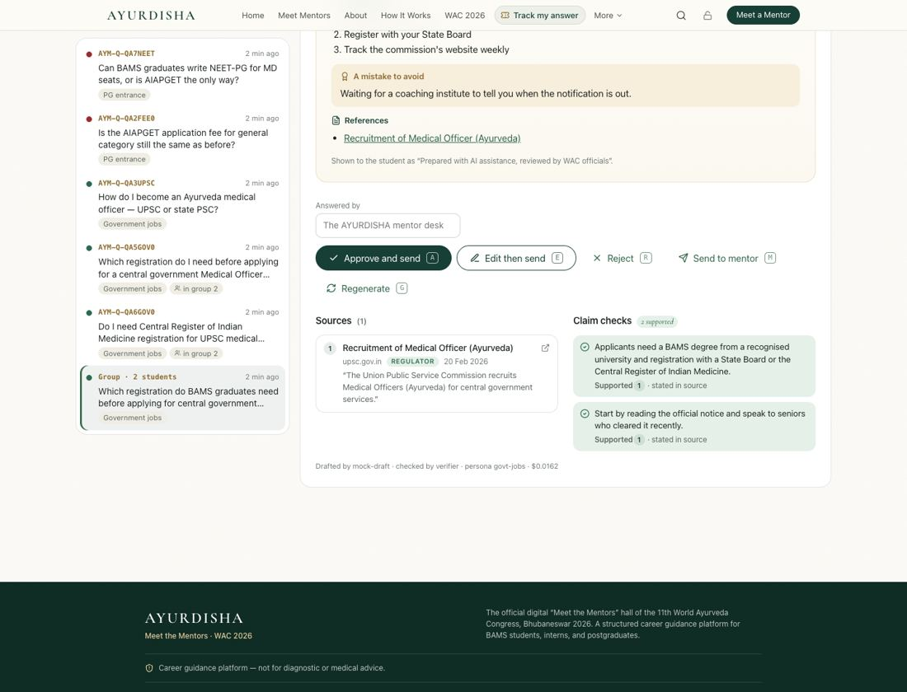
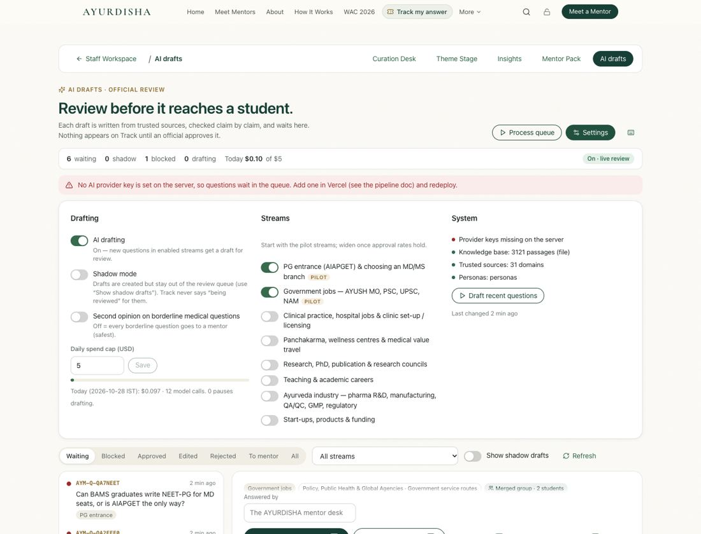

Meet the Mentors, digitally. Product, technology & ayurworld.org integration brief
A fact-checked overview of the AYURDISHA web app built for the Meet the Mentors programme at the 11th World Ayurveda Congress & Arogya Expo 2026 (Bhubaneswar, 10–13 December 2026), and how it could connect with the World Ayurveda Foundation website.
Live app: https://ayushmarg.vercel.app
Document date: 4 November 2026 (facts checked the same day)
Prepared for: Manager review · internal
Sources: project codebase and docs, the live app, ayurworld.org and the official 11th WAC brochure (V15)
STATUS LABELS: LIVE · PILOT · PLANNED · RECOMMENDATION
Executive summary
AYURDISHA in one page
What it is. AYURDISHA is a web app for the Meet the Mentors zone of the 11th World Ayurveda Congress (WAC). Ayurveda students, interns, PG scholars and young practitioners register with an email one-time code. They then ask one career question at the Ask Desk and read a mentor's written answer on Track my answer. Staff use PIN-protected tools to group similar questions, prepare mentor packs and review AI-drafted answers. Nothing an AI writes reaches a student until an official approves it.
Where it stands. The app is live at ayushmarg.vercel.app, hosted on Vercel in Mumbai (bom1), with Google Firestore as the database. The live API confirmed this on 4 Nov 2026. The Ask Desk fix from 4 Nov is in the live build. The AI drafting pipeline is built and tested, but it ships switched off. Turning on the pilot (two streams: PG entrance and government jobs) is still a to-do, and the AI provider's billing is unresolved (see section 4).
23
mentors on the tentative WAC 2026 roster (19 with profile details)
273 / 273
unit and API tests passing (npm test, run 4 Nov 2026)
41 / 41
end-to-end journey steps passing (npm run e2e, run 4 Nov 2026)
32 · 14 · 2
registered · questions asked · answered, from the site's public counter on 4 Nov (may include test records)
10 / 56
career themes and sub-areas students can file a question under
35
trusted domains the AI may cite (27 regulators, 6 research bodies, ayurworld.org, 1 other)
0.2%
students sent a mismatched group answer on a frozen 499-question benchmark (previous engine: 1.6%)
≈ $0.05
estimated AI cost per drafted answer; about $22 a day at 1,000 delegates (estimate, Oct 2026 docs)
Relationship to WAC and ayurworld.org
The official 11th WAC brochure (V15, hosted on ayurworld.org) lists "Meet the Mentors" as one of its Experience Zones and "Career Zone: Meet the mentors / Job Fair" among its associated events. ayurworld.org does not currently mention or link to AYURDISHA. The app's footer and FAQ call it "the official digital Meet the Mentors hall". We found no public organiser confirmation of that wording, so it needs organiser sign-off.
Recommended next steps RECOMMENDATION
This week: get organiser approval for the "official" wording. Add an "Ask a mentor" button on ayurworld.org that links to /ask?src=ayurworld. Source tracking for that link already exists.
Before the Congress: move to a subdomain such as mentors.ayurworld.org (a DNS record pointing to Vercel). Name a data controller and grievance contact, and decide on the AI pilot and its daily spend cap.
After the Congress: consider single sign-on with WAC delegate registration and an automatic mentor-roster sync. Both need an API from the organisers' registration system.
How to read the labels.LIVE means deployed at ayushmarg.vercel.app or present in the current code and covered by passing tests.
PILOT means built and tested but switched off or limited in production.
PLANNED means in project docs or the budget, but not built.
RECOMMENDATION means a proposal in this brief, not yet agreed with anyone.
Every figure gives its source. Estimates are marked as estimates.
Screenshots. Images come from the project's UI audit (captured 29 Oct 2026) and the AI pipeline docs, which used a local test environment with sample questions. The live UI has changed slightly since then; for example, "The Hall" now sits in the main navigation. No screenshot shows a real student's personal data.
Section 1
Context: World Ayurveda Foundation & the 11th WAC
Everything in this section is quoted or paraphrased from ayurworld.org or from the official brochure it hosts, as fetched on 4 November 2026. The URLs are listed with each fact.
Fact (as stated by the source)
Detail
Source
Event
11th World Ayurveda Congress & Arogya Expo 2026
ayurworld.org (home)
Dates & place
10–13 December 2026, Bhubaneswar, Odisha, India
ayurworld.org/11th-wac-arogya-expo-2026/
Theme
"Integrative Ayurveda for Global Health"
ayurworld.org (home and 11th WAC page)
Organiser and support
Organised by World Ayurveda Foundation, with the active support of the Ministry of Ayush (Government of India) and the Government of Odisha (host state)
ayurworld.org/11th-wac-arogya-expo-2026/
What WAC is
"A platform established by World Ayurveda Foundation to propagate Ayurveda globally in its true sense"; the first WAC was held in Kochi in 2002
ayurworld.org/about-wac-2/
Scientific programme
11 major themes, including NCDs, Wellness, Technology, Medical Emergencies, Oncology, Dietetics & Nutrition, One Health, Antimicrobial Resistance, Drug Development, Pashu Ayurveda, Vriksha Ayurveda
ayurworld.org/11th-wac-arogya-expo-2026/
Arogya Expo
A platform for Ayurvedic pharmaceutical companies, healthcare providers, educational institutions, research organisations and others to showcase products and services
ayurworld.org/11th-wac-arogya-expo-2026/
Meet the Mentors
Listed as an Experience Zone ("7. Meet the Mentors"). "Career Zone: Meet the mentors / Job Fair" appears in the list of associated events, and a Meet the Mentors convenor is named on page 18.
Official brochure V15 (PDF, pp. 10 and 18): ayurworld.org/wp-content/uploads/2026/09/11th-WAC-Main-Brochure-V15.pdf
Scale the brochure projects
"6000 Plus Delegates", "11 Experience Zones", "Participation from over 50 countries" (the organisers' projections, not AYURDISHA data)
Brochure V15, p. 13
Delegate registration
"Last Date For Delegate Registration: 31-October-2026". Indian delegate fee ₹4,000 + 18% GST; BAMS students ₹3,500 + GST; spot registration ₹5,000 (brochure); international delegates $100 + 18% GST
ayurworld.org/delegate-fee-structure/ and brochure p. 12
Secretariat
WAC Secretariat, World Ayurveda Foundation, Sadashivnagar, Bengaluru. General queries: info@ayurworld.org (the organisation's public contact)
ayurworld.org/contact-us-2/
Official mobile app
The privacy policy mentions an "Android & IOS Mobile Application of the 11th World Ayurveda Congress"
What the ayurworld.org site runs on (only what is visible)
The page source declares WordPress 7.1.4 as its generator. The Slider Revolution plugin and Google Site Kit are also present. The server reports nginx and PHP/8.1.
The WordPress REST API is linked at /wp-json/. The site has a delegate login at /wac-manager/login and an exhibitor login at /wac-manager/exhibitor-login.
The homepage response had no X-Frame-Options or Content-Security-Policy header, so the site itself puts no restriction on embedding other pages.
The homepage HTML contains no mention of AYURDISHA or "Meet the Mentors". The only Experience Zone links are to the Lab Tech and Pharma Tech flyers.
How AYURDISHA supports Meet the Mentors
The brochure names the zone but does not describe a digital process. AYURDISHA provides one:
Delegates register online and ask a focused career question before or during the Congress.
Staff merge near-identical questions so that one mentor answer serves a small group (a "mentor table" of up to 7 students).
Mentors get printable question packs.
Every student can read their written answer afterwards, including those who could not travel to Bhubaneswar.
The app's terms say registration does not require a Congress pass. The app also states that its own pass number is separate from WAC delegate registration.
Endorsement status. The app's footer says "The official digital 'Meet the Mentors' hall of the 11th World Ayurveda Congress", and its FAQ repeats this. Neither ayurworld.org nor the brochure mentions AYURDISHA. The project's own UX audit (29 Oct) flags that this "needs sign-off", and the app's Terms page says its terms are "not a substitute for a signed contract with the World Ayurveda Foundation". Get written organiser approval before presenting this as official.
Section 2
User journeys
2.1 Student or delegate LIVE

Welcome deck (/welcome): 6 slides covering Welcome, Register, Ask, Merge, Answer and Track. Captured 29 Oct 2026.

Home (/). The hero now has a gold "Career question? Ask Desk →" button, and the nav includes "The Hall". Captured 29 Oct 2026, before those changes.
Arrive. New sessions see the 6-slide welcome deck at /welcome (skippable). Short links /ask and /a open the Ask Desk directly. Any ?src= tag, such as ?src=qr, is stored for the visit, counted once and removed from the address bar.
Explore the Hall./#hall has an interactive "How the hall works" map with 8 zones: Welcome, Ask kiosks, Organiser desk, Career videos, Mentor pods, Theme stage, One-to-one room and Podcast room. Each zone links to the matching part of the app.
Register (/#register). The student enters name, age, sex, institute and email. A 6-digit code is emailed; it is valid for 10 minutes, can be resent after 60 s and allows 5 wrong attempts. Once verified, the app issues a pass number in the format 11WAC/2026/NNNN (sequential and server-assigned; the student never types it).
Ask (/#ask). The student picks one of 10 career themes and 56 sub-areas, writes the question and adds optional context and profile fields (stage, state, registration status, attending in person). A rules-only hint can suggest a better theme, ask for more detail, or show a helpline for distress messages; it never blocks sending. The student receives a ticket number such as AYM-Q-XXXXXXXX.
Track my answer (/#track). The student looks up the ticket (case, spaces and a missing prefix are tolerated) or, if signed in, their own email. Status moves from Received to Being reviewed to Answered. An answer that started as an AI draft carries the note "Prepared with AI assistance, reviewed by WAC officials".
Mentors (/mentors, /mentors/:slug). A searchable directory of the 23-name tentative roster, filterable by domain, with profile pages.
Learn. Career tracks (/programs, 10 tracks), Knowledge pods (/#pods, with a server-side journal search), Opportunity Exchange (/#exchange), Resources, Events (3), the Podcast corner (/#podcast, where staff add recorded talks), the published Theme Stage answers (/#board), and FAQs (16).
Legal pages./privacy, /terms, /disclaimer. Privacy and Terms are labelled "Placeholder" until the organisers supply their details (see section 8).

Register: details, then email verification, then confirmation. Captured 29 Oct 2026.Track my answer while an official reviews a draft (sample ticket from the local test environment).
Interactive hall map at /#hall. A simulated preview of the illustrative layout (not a real floor plan).
Ask Desk QR short link

A branded QR code in the repo encodes https://ayushmarg.vercel.app/ask?src=qr. Scanning it opens the Ask Desk, and the visit is counted under "qr" in Insights → Sources, which shows visits, registrations and questions per source. Any poster or partner can use its own tag, for example ?src=ayurworld or ?src=poster-hall-a. Tags are anonymous: lower-case letters, digits and dashes, up to 32 characters. Visit pings are rate-limited to 12 per network every 10 minutes.
2.2 Staff and officials LIVE
Sign in with the staff PIN (the lock icon, or /#staff). A wrong PIN returns 403. A correct PIN sets an HttpOnly staff cookie. All staff operations are checked on the server.
Curation desk (/#curate). Questions are grouped automatically by the precision-first merge engine (section 5). Each group card shows a confidence badge: High confidence, Good match or Check this group. A "Why merged" line lists the shared subject, the shared ask and the weakest and average pair scores. A Suggested merges panel offers Merge or Keep apart, and Keep apart decisions survive re-merges. Staff can Split out one student from a group. Saves are version-locked, so a stale save is refused with HTTP 409 rather than overwriting someone else's work.
Insights. A briefing board where staff can answer a single question, plus Sources statistics for QR and partner links.
Mentor pack. Exports mentor question sheets to an Excel workbook (xlsx library) and imports answers back. The end-to-end test checks the round trip.
AI drafts desk (/#ai, PILOT). See section 4 for detail. It has a queue sorted urgent first, then normal drafts by risk and age, then "Limited sources" drafts, then blocked or medical ones. Each draft shows a triage badge, source cards and claim checks. The actions are Approve and send, Edit then send, Reject (with a reason), Send to mentor, Regenerate, Re-file and Ask student to rephrase. Settings cover the on/off switch, per-stream switches, shadow mode, a borderline-medical second opinion, the daily spend cap, Draft existing questions (backfill, with a dry-run preview and cost estimate) and Test connection.
Theme Stage and Podcast. Publish group answers to the public board, and add recorded talks without a redeploy.
Selection list. Staff can upload a Congress selection list, publish it and email the selected students (operations wacResultsSave, wacResultsPublish, wacResultsMail).
AI drafts desk in a local test environment with sample questions and a mock provider. The red banner shows how the desk explains a missing provider key.
2.3 Mentors
Mentors have no login. They receive the printed or Excel mentor pack with each group's representative question, sit at mentor tables in the hall, and their answers are entered by staff. Drafts that need expertise are sent to them with Send to mentor. A mentor portal is PLANNED: it does not appear in the code or the roadmap and would be a new feature.
Rules first, with an AI classifier only when the rules are unsure; scripted replies in English, Hinglish and Hindi
Officials
PILOT (runs only when AI is on)
Vector search over the knowledge base
Firestore findNearest on a 768-dimension index
System
PLANNED (needs an index-admin role; production uses keyword search, BM25)
Knowledge-base gap fill
Fetches the AIAPGET, NEET-PG, UPSC/PSC, NCISM and Gulf licensing documents
System
PLANNED (script ready; needs open network to run)
Uptime and error monitoring (Sentry / UptimeRobot), Firebase App Check
Listed in the Sept 2026 budget proposal
Operations
PLANNED (not in the code)
Custom domain ayurdisha.ai
Listed in the budget proposal (registrar quote ₹4,761)
Everyone
PLANNED (purchase not verified)
ayurworld.org integration
See section 9
Everyone
RECOMMENDATION
Section 4
AI answer system
AI drafts career answers for officials to review. Nothing is ever auto-published, and production ships with AI off. With AI off, students see no change.
Pilot status (4 Nov 2026). "E. Live AI ON" is still a to-do in the project log. On 28 Oct, the project's Google AI Studio key could list models but generation returned "prepaid credits are depleted". The Vertex AI route (Google Cloud credits) was waiting for three console steps: link billing, enable the API, grant a role. Whether AI is currently switched on in production cannot be checked without staff access, so it is reported here as not verified.
Architecture
Student side (public)
Ask DeskQuestion saved to Firestore; ticket returned
Queueai_jobs entry, only if AI and the stream are on
Worker triggerSigned call right after submit, daily Vercel cron, or desk open
Track"Being reviewed" while a non-shadow draft is pending
AnswerShown only after an official approves
▼
Worker (serverless, 45 s budget per run, job locks, retries, daily spend cap)
1 · RedactRemoves names, emails, phones, WAC numbers, ticket ids and personal URLs before any AI call
2 · Triage & classifyRules in English, Hinglish and Hindi; AI classifier only when unsure; medical screen
Medical or restrictedNever drafted; a scripted reply or mentor route instead
3 · Reuse or retrieveApproved-answer bank, then trusted chunks (BM25, plus vectors when enabled)
Thin sourcesMentor-assist draft: general guidance with unsourced numbers removed
▼
4 · DraftStream persona (17); JSON answer with [c:chunkId] citations
5 · VerifyA separate model checks each claim; deterministic number, date and authority checks override it
6 · Re-checkStronger model only for borderline confidence (0.6–0.75)
7 · Official reviewApprove, Edit then send, Reject, Send to mentor, Regenerate
Redrawn from the Mermaid diagram in docs/ai/AI-ANSWER-PIPELINE.md. Code lives in server/ai/*, the desk in src/staff/AiReviewDesk.jsx.
Models (defaults from server/ai/provider.js)
Step
Default model
Fallbacks
Notes
Draft
gemini-4-argon, thinking "low"
gemini-3.1-pro-preview, then gemini-3.8-flash
900 visible output tokens
Verify
gemini-3.8-flash
gemini-3.6-flash
Checks each claim against the quoted passage
Re-check
gemini-4-argon
—
Assumed for about 25% of drafts
Classify / triage
gemini-3.5-flash-lite, thinking "minimal"
gemini-3.1-flash-lite, then gemini-3.8-flash
Only for borderline cases; about $0.0005 per call
Embeddings
gemini-embedding-001, 768 dimensions
—
Not yet computed for the bundled knowledge base
Knowledge-pod search
gemini-3.6-flash
—
Counts toward the same daily cap
The provider is switchable to Google Vertex AI with AI_PROVIDER=vertex. The code also supports Anthropic and OpenAI, but only Gemini/Vertex is configured. The models were listed as available for the configured key on 28 Oct 2026.

Source card with a regulator badge, plus claim checks marked green for supported (local test environment, mock drafter).

Settings: AI switch, shadow mode, per-stream pilot switches, daily spend cap (local test environment).
Safety design
Privacy. Redaction runs before every AI call, and the triage classifier never sees raw personal data. Drafts are stored in staff-only ai_* collections, never on the public question record. The offline evaluation gate requires zero leaks.
Triage categories. On-topic, Wrong area (with a one-click Re-file), Unfocused (asks clarifying questions), Off-topic, Duplicate, and Restricted. Restricted has nine subtypes: medical, legal/financial, exam integrity, unsafe/illegal, personal data, abusive, self-harm (urgent and pinned to the top, with the Tele-MANAS 14416 / 1-800-891-4416 helplines and 112), promotional, and prompt injection. Scripted replies contain no fees, dates or rules.
Medical routing. Medical and treatment questions are blocked before drafting and go to a mentor. Approving them as-is is impossible.
Trusted sources. A citation to any domain outside the allow-list is invalid. Fees, dates, cut-offs, seats and eligibility need a regulator source no older than 12 months, and any number in an answer must appear in the cited passage.
Mentor-assist drafts. When sources are thin, the draft gets an amber "Limited sources — mentor to complete" label. Any sentence containing an unsourced digit, month, currency, percentage or link is removed automatically. These drafts are always high risk with confidence of 0.4 or less.
Controls. Shadow mode (on by default) generates drafts but hides them from the queue. The daily spend cap defaults to $5 per India-time day. An unauthenticated worker call is refused when CRON_SECRET is set, and limited to one run a minute otherwise.
ayurworld.org (already trusted, which is relevant to the integration in section 9)
Other (1)
ayurvedanama.org
Knowledge base: the bundled data/kb/chunks.jsonl has 3,189 passages (8.4 MB) as of 4 Nov 2026. The KB doc reports coverage from 19 of 31 sources at the time. Known gaps are AIAPGET (NTA), NEET-PG (NBEMS) and UPSC medical officer notices.
Evaluation results (from the project's reports)
Evaluation
Result
Source and date
Offline gate, 400-question frozen set (25 medical, 40 with synthetic personal data)
Medical sent to a mentor 25/25 · personal-data leaks after redaction 0/40 · career questions wrongly held back 0/375 · stream routing 282/282 · time-sensitive asks flagged 9/9 — PASS
tests/ai-eval/reports/eval-2026-10-28.md
Live run, 30 questions (second run, before mentor-assist existed)
4 drafted, 23 stopped for insufficient sources · factual support 96.9% · citation validity 100% · unsupported claims missed by the verifier: 0 · approvable with light edits: 3 of 4 drafts · p50 latency 4.3 s, p95 27.6 s · run cost $0.33
eval-2026-10-28-live30-v2.json
Same live run: personal-data metric
The leak metric flagged 7 items. It was later corrected because it had been counting public contact details inside source passages; it still checks the student's name and email in the prompt. No re-run with the corrected metric has been recorded.
PROGRESS.md log; live30 reports
Triage, rules only, labelled set of 239 items (30 Hinglish, 14 Hindi)
Recomputed for this brief on 4 Nov 2026 from tests/ai-eval/triage-set.json
Caveat: the evaluation sets were written by the project team. Real Ask Desk questions may be phrased in ways these sets don't anticipate.
Cost (estimates from docs/ai/AI-ANSWER-PIPELINE.md; prices checked 28 Oct 2026; December rates)
Scenario (per event day)
Questions
Drafts
Recommended setup
All-Pro
All-Flash
Low (30% of 1,000 delegates ask)
300
182
$8.92 (₹785)
$11.21
$2.10
Expected (50% ask 1.25 questions each)
625
440
$21.63 (₹1,903)
$27.19
$5.10
High (80% ask 1.5 questions each)
1,200
1,056
$51.90 (₹4,567)
$65.25
$12.24
About $0.049 per drafted answer with the recommended setup (Pro-class draft, Flash-class verify). Four event days at the expected rate come to about $86.50 (₹7,612 at an assumed ₹88/USD). Output token counts are assumptions until a live run is measured. The docs recommend a $30/day cap during the event, raised to $60 if traffic looks like the "high" row, and keeping the $5 default until launch. Medical questions, reused answers and caching discounts are not counted, so the real bill should be lower.
Section 5
Question-merge engine
Many students ask the same thing. The merge engine (shared/merge.js, the same module in the browser and on the server) groups questions so that one mentor answer serves up to 7 students. It is precision-first: a wrong merge means a student gets an answer to a question they didn't ask, so when in doubt the engine only suggests a merge to staff.
How it works
Same theme only, and by default the same sub-area too ("Keep sub-areas separate" is on). Questions from different themes are never merged automatically.
Intent signature for each question. Greetings, self-introductions and sign-offs are stripped, with stop-words in English, Hinglish and Devanagari. Synonyms are folded together ("MD/MS" becomes PG, "sarkari" becomes government), words are stemmed and typos snapped. The engine then extracts subject anchors from a curated Ayurveda-career taxonomy (PG branches, AIAPGET, PSC, clinic, countries…), the ask type (cost, salary, books, syllabus, cut-off, eligibility, licence…) and specifics (country, exam, branch, numbers, with or without PG).
Hard rules for an automatic pair. No conflicting specifics (UK vs Germany never merge), at least one shared subject, a compatible ask, at least two shared content words, and a score at or above the threshold. The score is 0.55 × weighted overlap + 0.35 × word overlap + 0.10 × word-pair overlap, damped when ask types differ.
Complete linkage. Every pair inside a group must qualify, which removed the chained-merge errors. Groups never exceed 7 students.
Three tiers. AUTO (merged; badge "High confidence" or "Good match"), SUGGESTED (shown to staff with a reason, never merged until a person decides), and LOW (never shown).
Locks. Groups that are answered, sent to a mentor or published never change on re-merge. Answers are never copied between groups. Re-merging is deterministic and idempotent, and a stale save returns 409.
Accuracy on data never used for tuning (threshold 0.48, sub-areas kept)
Benchmark set
Engine
Students given a mismatched answer
Auto-pair precision
Auto recall
Recall with accepted suggestions
B held-out (163 questions)
Previous live engine
0.6%
0.981
0.167
—
Precision-first (current)
0.0%
1.000
0.123
0.277
NEW-2 (499 questions, frozen 25 Oct, never inspected)
Previous live engine
1.6%
0.923
0.284
—
Precision-first (current)
0.2%
0.995
0.219
0.490
Invariants held on all 6 datasets: 0 cross-theme groups, 0 groups over 7, 0 lost or duplicated questions; results are independent of input order and stable on re-merge.
Speed at 1,500 questions: 92 ms to build groups and 75 ms to compute suggestions.
The trade-off: fewer students are merged automatically (40% vs 47.5% on NEW-2). Staff recover the rest through Suggested merges, and 96% of suggested pairs on NEW-2 were correct.
Recommended threshold: 0.48 with "Keep sub-areas separate" on. This is the shipped default and is confirmed by the engine comparison report (24 Oct). 0.46 is a safe "more merges" setting. Avoid going below 0.46 with sub-areas mixed. An older benchmark doc recommends 0.45, but that was for a candidate engine that was never shipped.
Known limits (from the spec): words that signal an ask can hide inside a back-story; the representative question may carry a typo; subjects missing from the taxonomy fall back to word overlap; benchmarks are synthetic. On event day, watch for "Check this group" flags.
Interface: English only. The page declares <html lang="en">, and the code has no translation (i18n) framework. A Hindi or other-language interface would be a PLANNED or RECOMMENDATION item.
Understanding questions: English, Hinglish (Hindi in Latin script) and Hindi in Devanagari. Triage rules, the medical screen and the merge engine's stop-words cover all three. The labelled triage set includes 30 Hinglish and 14 Hindi items.
Scripted replies: English and Hinglish templates for every category, plus Hindi for some. Where no Hindi template exists, the reply falls back to Hinglish, then English.
Content (mentor profiles, career tracks, FAQs, legal pages, AI answers): English.
Programming languages and formats
JavaScript (ES modules) and JSX: React front end, Node.js serverless functions, and shared modules in shared/ used by both browser and server.
CSS with design tokens (src/styles/*, src/aym.css).
Python for asset scripts only: Open Graph image, branded QR, hall-map preview, and PDF text extraction (pypdf) in the knowledge-base gap fetcher.
Data formats: JSON (config, store, benchmarks), JSONL (knowledge-base chunks), Markdown (stream personas, docs), Excel .xlsx (mentor pack, selection list), XML (sitemap), SVG and PNG (QR).
Section 7
Technology stack & architecture
Layer
What is used (versions from package.json)
Front end
React ^19.1.0, React DOM ^19.1.0, React Router ^7.18.3, lucide-react icons ^0.525.0; built with Vite ^7.0.0 and @vitejs/plugin-react ^4.7.0. A single-page app with lazy-loaded pages.
Back end
Vercel serverless functions in Node.js: api/aym-store.js (one operation-based API, 30 s limit), api/ai-worker.js (60 s), api/knowledge-chat.js (60 s). Logic lives in server/.
Database
Google Cloud Firestore through firebase-admin ^14.3.0, server-side only. firestore.rules denies all browser reads and writes. Fallbacks for development: Vercel Blob (@vercel/blob ^2.8.0) or a local file.
Vercel, region bom1 (Mumbai); daily cron 30 2 * * * UTC (08:00 IST) calls the AI worker. The docs note the Hobby plan allows only daily crons; a 5-minute cron needs Pro.
Email
Resend API when RESEND_API_KEY is set, otherwise SMTP through nodemailer ^9.0.5, otherwise a console fallback in development. Which one production uses is set in Vercel and was not inspected.
AI provider
Google Gemini API, or Vertex AI when switched (section 4)
Documents
Excel through xlsx ^0.18.5. The app has no runtime PDF library; project PDFs are rendered from HTML with headless Chrome scripts. PowerPoint via pptxgenjs (development only).
Testing
Node's built-in test runner: 273/273 (npm test). End-to-end journey script: 41/41 (npm run e2e). Both run on 4 Nov 2026. The QA report also lists a render smoke test (29/29), a UI smoke test (23/23) and an Ask render check (6/6) using happy-dom (not a project dependency). AI evaluation: npm run eval:ai. Merge benchmark: npm run bench:merge.
Security (verified in code and live headers)
Headers on every route: a strict Content-Security-Policy (default-src 'self'; scripts from self only; connect-src 'self'; frames only from youtube-nocookie and Vimeo; object-src 'none'; frame-ancestors 'self'), plus X-Frame-Options: SAMEORIGIN, nosniff, a strict referrer policy, and a Permissions-Policy that disables camera, microphone and geolocation.
Staff access: the PIN is read only from server environment variables and never returned. The staff cookie is an HMAC of the PIN, set with HttpOnly; SameSite=Lax; Secure. Every staff operation is checked on the server, and the e2e test confirms anonymous callers get 403.
Email codes: the pending code lives only in a signed HttpOnly cookie, never in the database. Limits: 10 minutes validity, 60 s resend wait, 5 attempts.
Rate limits and secrets: visit pings 12 per network per 10 minutes; unauthenticated worker calls get 401 when CRON_SECRET is set (otherwise one run a minute); a daily AI spend cap.
Demo controls are off in production. Seeding and wiping are allowed only in local development or on a non-production deploy with AYM_DEMO_OPS=1, and the buttons render only in development builds.
Input handling: question records are normalised (string fields only, length caps, staff-only fields stripped). Test-probe operations are PIN-gated and limited to [TEST] data.
Accessibility, performance and SEO
Lighthouse, 29 Oct 2026 (before later fixes): desktop home scored 98 for performance and 100 for accessibility, best practices and SEO. Mobile home scored 69 for performance (largest paint 5.7 s); mentors on mobile scored 60 with a layout shift of 0.94. These have not been re-measured since.
Accessibility features: skip link, focus trap in dialogs, respect for reduced-motion settings (including the welcome deck), and "opens in a new tab" hints. The UX audit noted remaining contrast and heading-order issues.
SEO: meta description, canonical URL, Open Graph image (1200×630), robots.txt (blocks /api/ and /docs/), and a generated sitemap.xml with 58 URLs.
Resilience: per-view error boundaries, a one-time reload after a new deploy, and an automatic resend on network errors when asking a question.
Section 8
Data & privacy
Data
Fields
Where stored
Who can read it
Delegate profile
Name, age, sex, institute, email, issued pass number, created date, optional source tag
Firestore kv (user record plus email and pass-number indexes)
The signed-in delegate (own record); staff
Question
Ticket, theme and sub-area, question (up to 2,000 characters), context, stage, state, institution, registration and attendance status, consent flags (follow-up, publish), optional mobile, anonymous id, source
Firestore questions
Staff; the public Track lookup returns only that ticket's question and answer, with no email or name
Groups and answers
Members, representative question, answer, status
meta/clusters
Public: published answers only, with no personal data
AI records
Jobs, drafts, claims, usage
ai_*
Staff only
Sessions and staff auth
Signed HttpOnly cookies; the email code is never stored in the database
Browser cookie
—
Selection list
Selected student rows (name, email, institute)
kv
Staff; public only once staff publish it
No student personal data is sent to the AI. Redaction runs before every AI call (section 4). The offline gate shows 0/40 leaks, and the live metric needs a re-run.
Firestore region and backups are not recorded in the repo. The storage doc recommends asia-south1 for India, and the hosting functions run in Mumbai.
Retention and deletion: no automated retention or deletion exists. The Privacy page tells students to contact the curation desk "through Congress / World Ayurveda Foundation channels" and says the site "does not yet publish a dedicated privacy email".
Organiser inputs pending (from the app's legal pages and the UX audit). The data controller or legal entity, privacy officer, grievance contact (India's DPDP Act requires a named grievance contact), registered address, a retention period, a deletion process, and whether age and sex need to stay mandatory (the purpose is not stated). Privacy and Terms are labelled "Placeholder" until these are supplied.
Section 9 · Recommendations
Integration options with ayurworld.org
Everything in this section is a RECOMMENDATION; none of it has been agreed with the World Ayurveda Foundation. Effort figures are rough engineering estimates for the AYURDISHA side unless stated otherwise. Some building blocks already exist: ?src= source tracking, deep links to mentor profiles, and ayurworld.org on the AI trusted-source list.
Constraints found in the code today
Embedding is blocked by design. AYURDISHA sends frame-ancestors 'self' and X-Frame-Options: SAMEORIGIN, so no other site can show it in an iframe until those headers change.
Cookies are SameSite=Lax. Inside an iframe on a different site (ayurworld.org embedding ayushmarg.vercel.app), browsers will not send the delegate or staff cookies. Registration, Ask and staff tools would fail inside such an embed. A subdomain of ayurworld.org counts as the same site, so this problem goes away there.
The domain is hard-coded in src/siteMeta.js (SITE_ORIGIN), scripts/write-sitemap.js, index.html (canonical and Open Graph), robots.txt, the answer-email link base (server/answerNotify.js) and the QR script. All need updating for a new domain.
Pass-number naming. AYURDISHA issues its own 11WAC/2026/NNNN and calls it a "WAC registration number". The UX audit flags that this collides with real Congress registration. The official delegate system lives at ayurworld.org/wac-manager/, and its number format is unknown.
Option
What it involves
Effort (estimate)
Needed from the ayurworld.org team
Risks
(a) Prominent link and co-branded landing
A "Meet the Mentors · Ask a mentor" button or menu item on the ayurworld.org home and 11th WAC pages, linking to /ask?src=ayurworld or /?src=ayurworld. Optionally a WordPress landing page using official wording and logos.
AYURDISHA: none (works today). WAF: about 1 hour in WordPress admin.
Approval of wording and logo use; a person to add the link
Minimal. "Official" claims must match what is approved.
(b) Subdomain, e.g. mentors.ayurworld.org
Add the domain to the Vercel project, have WAF create a DNS CNAME pointing at Vercel, then update the canonical URL, sitemap, robots, Open Graph, QR codes and email sender branding. The old URL keeps working.
About 1 day, including retesting and new QR codes
DNS access (one CNAME record), agreement on the name, possibly SPF/DKIM if mail is sent from an ayurworld.org address
DNS mistakes; printed QR codes must be regenerated before printing
(c) Embedded widgets
Read-only widgets (mentor list, published answers, an "Ask" button that opens a new tab) through an iframe or a small script. This requires adding https://ayurworld.org (and www) to frame-ancestors and dropping X-Frame-Options for widget routes only.
2–4 days for widget routes, headers and tests
A WordPress page with a Custom HTML block; agreement on placement
Cookie limits mean Ask and Register should not run inside a cross-site iframe; loosening the headers needs care
(d) Deep links with source tracking
Use links like /ask?src=ayurworld, /mentors/:slug?src=ayurworld (e.g. /mentors/hiten-vaja), /programs/:slug and /#track in WAF pages, newsletters, the official WAC mobile app and emails. Staff see the visits, registrations and questions per tag in Insights → Sources.
Built (0 days)
Placing the links; using one tag per channel (e.g. ayurworld-home, wac-app)
None significant; tags are anonymous
(e) Shared registration or single sign-onFUTURE
Let WAC delegates sign in to AYURDISHA with their WAC Manager account (OAuth/OpenID Connect, or a signed one-time link), or prefill the profile from WAC registration.
2–4 weeks, depending on the organisers' system
An API or identity provider on the WAC Manager side, technical contact, data-sharing agreement
High: an unknown system, privacy obligations, and not advisable before 10 Dec
(f) Data exchangeFUTURE
(1) A mentor roster feed from WAF (confirmed mentors, photos, bios) replacing the tentative 23-name list. (2) Delegate verification: the student enters their official WAC registration number and AYURDISHA checks it through an organiser API. (3) Optionally an export of published answers for the WAF magazine or website.
The roster file or API; a verification endpoint (number in, valid yes/no; no personal data back)
Personal data moving between systems; must be agreed under the DPDP Act
(g) Brand and legal alignment
Approve the "official" wording, WAC logo use and footer text. Name the data controller, grievance officer and privacy email. Link the AYURDISHA privacy page from or to the WAF policy. Rename the pass number (e.g. "AYURDISHA pass number") unless (f) makes it the real WAC number.
AYURDISHA copy changes: 0.5–1 day
Decisions and text from WAF's legal or communications team
Without this, presenting the app as "official" is unsupported
Phased plan RECOMMENDATION
Phase
Target window
Scope
0 · Approvals
Week of 4–8 Nov 2026
Organiser sign-off on wording, logo, data controller and grievance contact; choice between (a), (b) and (c); a named WAF technical contact for DNS and WordPress
1 · Link and track
By about 14 Nov
(a) button on ayurworld.org with ?src=ayurworld; (d) deep links in WAF channels; (g) copy updates on AYURDISHA (rename pass number, update legal pages)
2 · Own the address
By about 25 Nov (before QR printing)
(b) subdomain live; QR codes and posters regenerated; optionally the (c) read-only mentor widget; mentor roster confirmed through a one-time (f1) import
3 · Event
10–13 Dec 2026
Watch Sources statistics per channel; no integration changes during the event (change freeze)
4 · After the event
Jan 2027 onwards
(e) single sign-on and (f2) delegate verification if WAF exposes an API; a published-answers archive on ayurworld.org
The timeline assumes organiser responses within days. WAC delegate registration closed on 31 Oct 2026 according to ayurworld.org, while AYURDISHA registration does not require a Congress pass. The organisers should confirm whether that should stay so (section 11).
Section 10
Operations
Daily event checklist (from the project's operator docs)
Before doors open, check the app is reachable and the API reports "backend":"firestore". After any deploy, run the production probe script with the PIN supplied via environment variable. It creates and then removes [TEST] data.
AI desk (if the pilot is on): check the spend cap for the day, provider status in Test connection, and the banners. Press Process queue now while jobs are waiting.
Curation: Re-merge every 30–60 minutes, clear Suggested merges from the top, review "Check this group" cards, then write group answers.
Review urgent (self-harm) items first; the student's contact details are on the briefing board.
Export the mentor pack for each session, then import the answers.
Check Insights → Sources to see which QR codes and posters are working.
At the end of the day, confirm answered groups are published and notification emails have gone out.
Monitoring today
Vercel function logs and deployment status (Vercel dashboard).
The API ping operation (backend health) and the publicStats counters.
Desk banners for AI off, shadow mode, spend cap reached and provider errors.
No external uptime or error monitor is installed. Sentry and UptimeRobot are PLANNED in the budget proposal.
Support
The budget proposal includes an event-day helpdesk for registration and Track queries, plus on-call technical support during the 3-day Congress. Staffing is not yet confirmed in project files.
Costs
Item
Figure
Source and status
Total infrastructure and operations budget, recommended scenario
docs/INFRASTRUCTURE-BUDGET.md (Sept 2026). A proposal: "Committee Decision Requested"
Hosting (Vercel Pro, 2-month event period)
₹7,500 (recommended line)
Budget proposal; current plan appears to be Hobby (daily cron only)
Database (Firebase Blaze buffer)
₹5,500
Budget proposal
AI (Gemini buffer)
₹3,500 in the budget, versus about ₹7,612 estimated for 4 event days at the expected rate (section 4)
Budget (Sept) vs AI pipeline doc (Oct). The AI estimate is higher than the budget line; the contingency or Google Cloud credits could cover it
Email (Resend Pro or SendGrid)
₹1,800
Budget proposal
Domain ayurdisha.ai (first year)
₹4,761 (registrar quote ₹4,760.95)
Budget proposal, Annexure A; purchase not verified. Option (b) in section 9 would make it unnecessary
Section 11
Roadmap, remaining items & open decisions
Remaining items (from docs/PROGRESS.md and the design audits)
Item
Detail
Status
E · Live AI on (pilot)
Close the knowledge-base gaps, run evaluations before and after, prepare golden drafts, enable the pilot (PG entrance and government jobs), run 3 [TEST] questions, cleanup. Budget $20.
TO DO
AI provider billing
Either top up AI Studio or complete the Vertex steps (link billing, enable the API, grant the Vertex AI User role)
TO DO
Vector search
Grant the Datastore Index Admin role or create the 768-dimension index on kb_chunks; until then, keyword search (BM25) only
ORGANISER ACTION
Knowledge-base gap fetch
Run node scripts/kb/fetch-gaps.mjs on an open network (AIAPGET, NEET-PG, UPSC/PSC, NCISM, Clinical Establishments Act, Gulf licensing), then redeploy and redraft
READY, NOT RUN
Production verification
Run the Ask probe after each deploy. The 4 Nov Ask-submit fix is present in the live bundle (checked 4 Nov).
PARTLY DONE
Questions lost in the incident
Questions "saved" only in the visitor's browser during the Ask-submit incident cannot be recovered. The QA report suggests a notice asking students to check Track and ask again.
DECISION
F · Audit fixes, priority 1
Trust and privacy surface, Ask/Register redesign, removing the forced welcome redirect, layout shift and first-load performance, a single Career tracks hub, overlays closing on navigation
TO DO
G / H · Audit fixes, priorities 2 and 3
Home edit down to 7 sections, design-system convergence, imagery, accessibility polish (contrast, headings), staff shell, copy, soft 404
TO DO
Already fixed from the audit
Curation desk crash, error-boundary reset, demo controls hidden in production, The Hall in the nav, Ask Desk call to action, inclusive copy
DONE
UX audit baseline (29 Oct 2026, measured against apple.com/in): overall 5.3/10. Strengths were Track, the security headers and Lighthouse accessibility, best-practices and SEO scores. Weaknesses were information architecture (4.0), trust (4.0) and staff tools (3.5). Several of the top issues have since been fixed, as listed above.
Open decisions for the organisers
Endorsement and branding: may AYURDISHA call itself "the official digital Meet the Mentors hall"? Which logo and wording are allowed?
Legal: who is the data controller, privacy officer and grievance contact? What address and email should be published? What is the retention period after the Congress?
Integration: which of options (a) to (d) should go ahead before the Congress? Who controls ayurworld.org DNS and WordPress? Is a subdomain acceptable?
Pass number: keep the AYURDISHA-issued 11WAC/2026/NNNN, rename it, or verify against the official WAC registration?
Eligibility: WAC delegate registration closed on 31 Oct (per ayurworld.org). Should AYURDISHA stay open to anyone (the current terms say no Congress pass is needed), or only to registered delegates?
Mentor roster: confirm the 23 tentative names and supply photos, bios and consent for each mentor.
AI pilot: go or no-go, which streams, who reviews drafts, billing route (AI Studio or Vertex with Cloud credits), and the event cap ($30/day suggested).
Budget: approve the proposal (₹1,00,000 recommended) and the Vercel Pro upgrade; decide whether to buy ayurdisha.ai if a subdomain is chosen instead.
Data minimisation: should age and sex stay mandatory at registration?
Docs:docs/HOW-IT-WORKS.md, docs/PROGRESS.md, docs/DATA-STORAGE.md, docs/INFRASTRUCTURE-BUDGET.md, docs/ai/AI-ANSWER-PIPELINE.md, docs/ai/KNOWLEDGE-BASE.md, docs/ai/QUESTION-TRIAGE-SPEC.md, docs/merge/*, docs/qa/QA-REPORT-2026-11-04.md, docs/design/audit/UX-AUDIT-vs-APPLE.md, FIX-PROMPT.md, the Lighthouse JSON files, and tests/ai-eval/reports/*.
Commands run on 4 Nov 2026:npm test (273/273), npm run e2e (41/41), an offline recomputation of triage metrics, and read-only live checks (ping, publicStats, response headers, live bundle string check).
Web, fetched 4 Nov 2026: ayurworld.org home, /about-wac-2/, /11th-wac-arogya-expo-2026/, /delegate-fee-structure/, /contact-us-2/, /terms-conditions-privacy-refund-policy/, the home-page HTML and headers, and Brochure V15 (PDF text). Also ayushmarg.vercel.app (public pages only).
A7 · Not verified (stated as unknown in this brief)
Any organiser endorsement of AYURDISHA, or permission to call it "official".
Whether AI drafting is currently switched on in production, and the current AI provider billing status after 28 Oct.
Which email provider production uses (Resend or SMTP); the Firestore region; the Vercel plan tier.
Whether ayurdisha.ai has been registered.
Whether the WAC Manager registration system offers an API, and its registration-number format.
Whether the 23 mentors have confirmed. The roster is labelled tentative and was taken from organiser presentation slides.
Lighthouse scores after the 30 Oct–4 Nov changes (not re-measured).